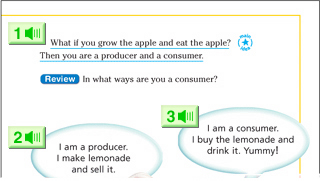
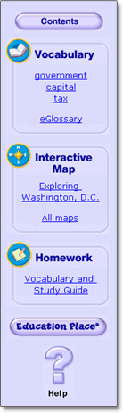

| eHistory-Social Science Book Help |
|
|
Click the Previous button to go back one page in the book. Click the Next button to go forward one page in the book. Click the Go to page button to go to any page in the book. Type the page you would like to see in the box that appears, then click OK. Click the Larger button to make the page larger. Click the Smaller button to make the page smaller. Click the Both pages button to see both pages of the book at the same time. If the book pages are best viewed together, the "Both Pages" button will glow. Click the Print page button to print the page you are looking at. |
|
The Read Aloud buttons allow you to hear the page read out loud. They work just like a tape player or CD player. You can also listen to the audio by clicking on the green buttons (shown at right). To stop the audio, click the same button again or use the "Read Aloud" buttons at the top of the page. |
|
 Click the Contents button to go to the first page of the Contents. Vocabulary includes words that are important for each lesson. Click a word to see and hear its definition. Click eGlossary to see an alphabetical listing of all the important words in the book. There is an Interactive Map for each unit in the eHistory-Social Science Book. Click the name of the map to see it. Homework has activities that your teacher may assign. Click the Education Place button to go to Houghton Mifflin's award-winning website, Education Place. At Houghton Mifflin History-Social Science on Education Place, you'll find games, Current Events, biographies, and more. You must be connected to the Internet to use Education Place. |
|
( Close this window. ) |
| © Houghton Mifflin Company. All rights reserved. With the exception of designated printable pages, no part of this work may be reproduced or transmitted in any form or by any means, electronic or mechanical, including photocopying or recording, or by any information storage or retrieval system without the prior written permission of Houghton Mifflin Company unless such copying is expressly permitted by federal copyright law. |